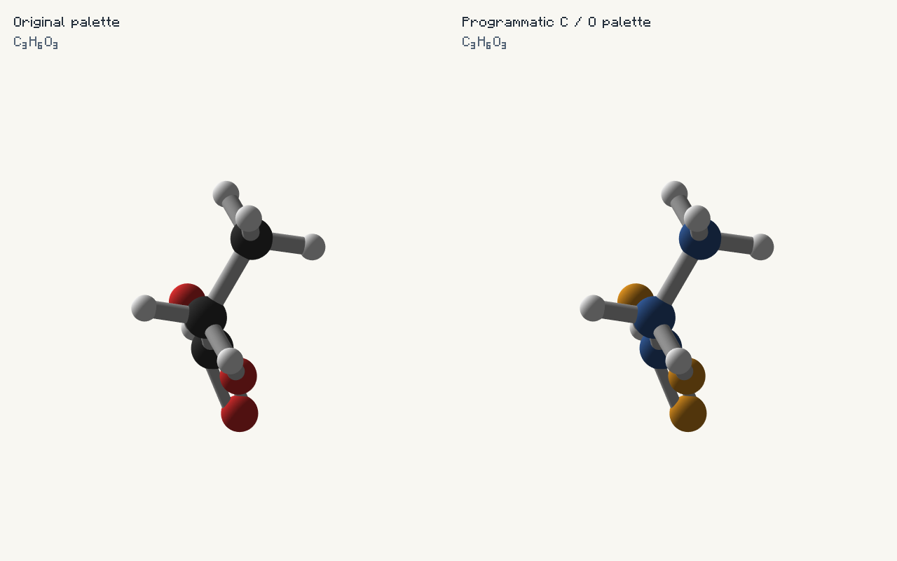

Change atom colors and reload them
Change the colors used for atoms without rebuilding their structures. Register a map such as carbon → dark gray and oxygen → red under a name belonging to your mod. You can later replace that map, change selected colors, or remove it.
Calls used in the examples
| Call or setting | Arguments | What it does |
|---|---|---|
ElementColors.replace(owner, priority, colors)
|
Owner ID; priority; symbol-to-RGB map | Install the complete palette contribution controlled by this owner. |
ElementColors.patch(owner, colors)
|
Existing owner ID; changed entries | Update only the supplied element colors. |
ElementColors.remove(owner)
|
Your palette owner ID | Remove your contribution. |
reloadElementColors()
|
No arguments | Reload client color resources and handle the returned completion result. |
When you finish: Remove your own palette owner during teardown if the override is temporary. Close readers opened by your resource loader. A failed resource reload retains the valid palette; handle and report the completion error.

Choose where your colors apply
| API | Scope |
|---|---|
| ElementColors | Register a named color map with replace, change selected colors with patch, or remove it. replaceJson reads the same values from JSON; snapshot returns a fixed copy. Colors affect only the local client. |
AvogadroClientApi.elementColors()
|
Read the effective client palette after resource packs, owners, and the local file. |
AvogadroClientApi.reloadElementColors()
|
Palette-only asynchronous resource/file reload, scheduled on the client thread. |
MoleculeRenderOptions.Builder.palette(map)
|
Existing draw-local override; captures a palette without modifying any global preferences. |
Set atom colors for your mod
import io.github.wurtzitane.avogadro.api.ElementColors;
import java.util.Map;
// RGB values have six hex digits; do not supply alpha (0xFF...).
// Replacing an owner publishes the whole layer atomically.
ElementColors.replace("my_mod:atom_colors", 20,
Map.of("C", 0x365E9D, "O", 0xE99A24));
// A patch changes selected entries and retains that owner's priority.
ElementColors.patch("my_mod:atom_colors", Map.of("H", 0xE8EAF0));
// Empty replacement/removal reveals lower-priority colors.
ElementColors.remove("my_mod:atom_colors");Call these during common initialization or from a configuration callback. All methods are thread-safe and touch no graphics objects. A dedicated-server registration has no effect on connected clients: palettes are local visual preferences, not synchronized chemistry. To distribute colors, ship a resource pack or register the same layer on client installations. Layers survive world disconnect; explicitly remove your owner's layer when disabling its feature. Restarted processes must register again.
When palette changes apply
import io.github.wurtzitane.avogadro.api.ElementColors
// Put this in a client-installed post-init script.
// The same Java API is safe on the server, but is not sent to clients.
ElementColors.replace('my_pack:atom_colors', 20,
[C: 0x365E9D, O: 0xE99A24, H: 0xE8EAF0])
// From your own reload/configuration callback:
ElementColors.replaceJson('my_pack:atom_colors', 20,
'{"C":"#365E9D","O":"#E99A24"}')
// ElementColors.remove('my_pack:atom_colors')Replacing the same owner removes obsolete entries. Programmatic mutations take effect on the next ordinary draw; no F3+T or molecule reload is required. This API does not introduce a script watcher or change GroovyScript's supported reload stages. If a later script statement fails, it does not roll back an already-completed API call; validate a complete map and replace once.
Choose where to save colors and which values win
{
"C": "#365E9D",
"O": "#E99A24",
"H": "#E8EAF0"
}The same partial object can be used in any of these places:
-
Resource pack:
assets/.avogadro/ element-colors. json -
Local user override:
config/.avogadro/ element-colors. json -
An application-owned file read into
Element. The API does not choose or write a filesystem path for your mod.Colors. replace Json(owner, priority, json)
Precedence is shipped defaults, resource packs in Minecraft's order, programmatic owners,
then local user overrides. Among API owners, higher integer priority wins; equal priorities
resolve by lexicographically later owner ID. A draw-local
palette(map) overrides its own captured colors last.
Resource and local files accept the 118 bundled symbols plus registered custom elements. API
layers also accept syntactically valid future symbols, permitting registration before a
custom element is created. A color entry never creates an element or changes periodic-table
group membership. JSON requires #RRGGBB; the Java map uses
0x. Invalid, duplicate, oversized or alpha-bearing values fail
explicitly. There are at most 64 API owners, 512 colors per owner, and 32 KiB of JSON per
update.
Reload only the palette
// CLIENT ONLY: keep this import and call in your mod's client code.
import io.github.wurtzitane.avogadro.api.client.AvogadroClientApi;
AvogadroClientApi.reloadElementColors().whenComplete((palette, failure) -> {
if (failure != null) {
System.err.println("Element palette retained: " + failure.getMessage());
} else {
System.out.println("Palette revision: " + palette.revision());
}
});F3+T also reloads the palette. Invalid file reloads retain all previous valid file layers; the direct future reports the exception and the F3+T listener logs it. Neither operation removes API owners. The local file is created as an empty object when absent. Colors are opaque: transparent atoms are not enabled by this API.
Keep a preview or export on one color scheme
import io.github.wurtzitane.avogadro.api.client.MoleculeRenderOptions;
var options = MoleculeRenderOptions.builder()
.palette(Map.of("C", 0x365E9D, "O", 0xE99A24))
.build();
Build options once and reuse them. Options deliberately capture colors; rebuild them when a
custom viewer should adopt a changed global palette. Ordinary tooltips, HEI previews, world
HUD models, and newly started exports obtain effective colors automatically. Existing
exports retain their initial snapshot for every frame. To inspect an opaque ARGB value, use
Avogadro; the common registration snapshot exposes only programmatic RGB contributions.
Changed effective colors select new bounded GPU and pre-rendered-animation cache entries. Identical updates retain the palette identity and do not rebuild geometry. No resource-file I/O or palette-map construction occurs during unchanged frames. Sphere geometry, radii, bond styles, rotation, and matching remain unchanged. Neutral bonds, element labels, electron/nucleon colors, and UI theme colors are separate styling concerns.